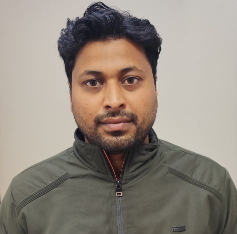

Dr. Krishna Kumar Saini
Assistant Professor

Assistant Professor
Krishna Kumar Saini is an Assistant Professor in the Department of Electrical and Electronics Engineering at MIT World Peace University (MIT-WPU), Pune. He has over 10 years of academic and research experience in the field of Electrical Engineering. He submitted his Ph.D. titled “Techno-Economic Assessment and Development of Microgrid Operation Strategies with Their Digital Replica Validation” in the Department of Electrical and Electronics Engineering at Birla Institute of Technology and Science (BITS), Pilani. He holds M.Tech. degree in Electrical and Electronics Engineering from Maharishi Dayanand University, Rohtak, and B.Tech. in Electrical Engineering from Rajasthan Technical University, Kota. His research interests include renewable energy-integrated power systems, microgrid operation and control, demand-side management, forecasting techniques, energy management strategies, and digital twin applications for smart energy systems. He has significant experience in the design and deployment of solar photovoltaic microgrids with battery energy storage systems and IoT-based monitoring. He is the inventor of a published patent on microgrid management using digital twin technology and has authored 11 research articles in reputed international journals, book chapters, and conference papers. He has also presented his work at international IEEE conference, IEEE PECON 2024 in Kuala Lumpur, Malaysia, where he received the International Travel Award from BITS Pilani.
Profiles